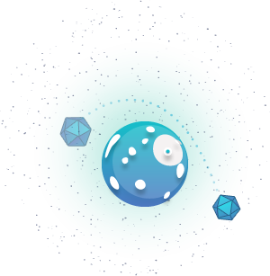
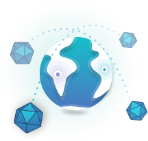
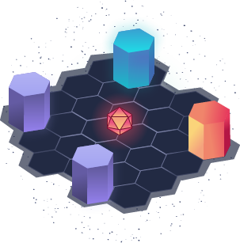
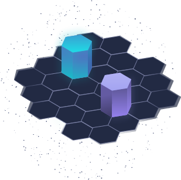
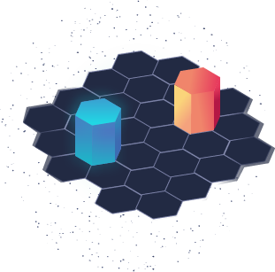
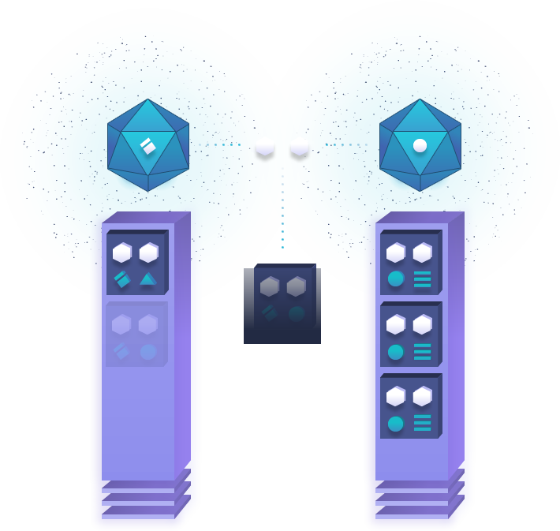
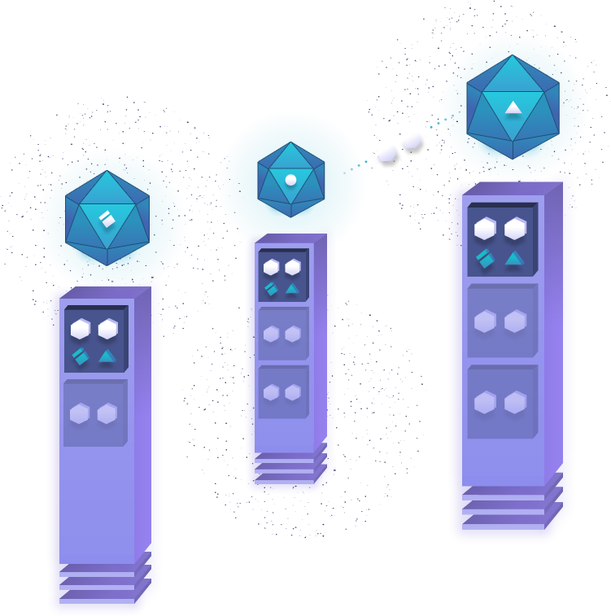
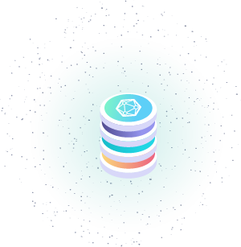
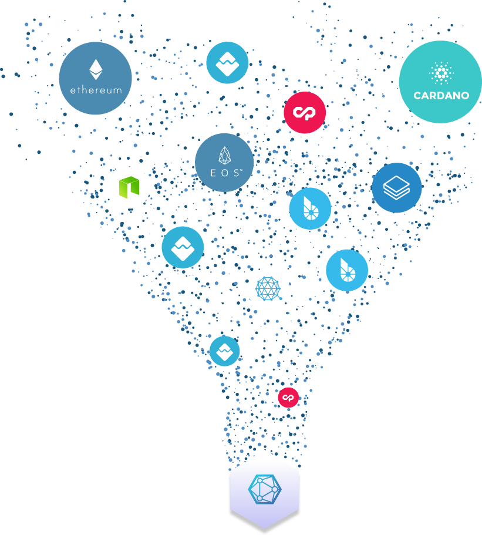

Centralized location verification refers to large fee-based corporations, brokers and institutions that charge both buyers and sellers involved in every transaction that relies on verifying a products delivery or XY-coordinate location.
BLOCKCHAIN JUST
ENTERED THE REAL WORLD
Blockchain developers can now interact with the real world as if it were an API.
PARTICIPATE IN THE XYO TOKEN SALE
Limited Time Bonus: 50% Additional Tokens With Each Purchase
-
00
days
-
00
hours
-
00
minutes
-
00
seconds
disrupt
transitive verb | dis-rupt | \dis-rėpt\to throw into disorder; to interrupt the normal course or unity of; To forever change the world with the introduction of new technology.

XYO NETWORK:
OFFLINE WORLD DECENTRALIZATION
Out of the 5,000 Blockchain Projects Launched To Date, All But Few Have Focused Exclusively On The Online World; Yet The Biggest Need For Decentralization Rests In The Offline World.
CENTRALIZED VS. DECENTRALIZED

DECENTRALIZED LOCATION VERIFICATION
Centralized location verification refers to large fee-based corporations, brokers and institutions that charge both buyers and sellers involved in every transaction that relies on verifying a products delivery or XY-coordinate location.
High fees
Nearly 50% of the transactions involved in the buying, fulfillment, transaction and dispute resolution services for buyers and sellers is taken up by middle-men (which includes brokers, banks, payment systems, insurance, marketing agencies, product protection and more).
High entry costs (closed system)
Traditional location-specific verification services (like specialized package delivery, automobile delivery and container delivery services) have upfront costs required to even transact in the first place. This increases costs before participants even transact.
Barriers to entry (Corporate moats)
The most sophisticated capitalists look for investment opportunities in businesses that have established moats to deter competitors and new entrants from entering the market. Due to years of centralization, consolidation, lobbying government officials and government regulation, the biggest corporations and brokerages that rely on verifying location-specific heuristics enjoy virtually no competition from rivals. The end result of this creates a power-law distribution curve where the richest corporations continue to set themselves apart, and reap fees from consumers because there is simply no other option for consumers in transactions relying on location verfication.
External and internal vulnerabilities
Corporations have an obligation to do what’s in the best interest of increasing their share value; this creates interesting conflicts of interests between what’s best for the stakeholders and what’s best for consumers. The incentives are not always aligned. Additionally, in location-verification dependent businesses and brokerages, there’s internal pressure to increase profit and not innovate in order to make location verification cheaper, more automated and trustless.
Lower fees
The XY Oracle Network leverages cryptoeconomics to create an effecient market by requiring market participants to use the XYO Network Token to pay for use. This enables buyers and sellers in a transaction to pay only for the computation and location-verification execution, not overhead.
Free to use (open-source)
The XY Oracle Network is completely open and free to use, expand, grow and improve upon. There is no entry fee to join or use the network. It’s owned by the community and is publicly accessible to all, no matter what location or government jurisdiction a person resides.
No entrance barriers (fair competition)
As it stands today, consumers have no other choice but to transact using brokerages and middle-men for certain transactions. For instance, a used-car transaction involving two parties (a buyer and seller of a used vehicle). Assuming they do not already know one another, the buyer and seller are forced to use a used-car brokerage or service and pay exhorbitant fees because there’s no other option. The alternative cost is too high. Thus the middle-man brokerage continues to build a competitive moat that gets more defensible each passing year. This changes with the introduction of Ethereum Smart Contracts and the XY Oracle Network.
Autonomous and transparent system
The XY Oracle Network uses cryptoeconomics to create an autonomous system that benefits the buyers and sellers involved in transactions which rely on verification of location (i.e. package delivery). The rules and conditions of each transaction are governed by transparent Smart Contracts, which are programmed into the XY Oracle Network. This enables buyers and sellers to trade in transactions involving location verification by replacing centralized middle-men with an open, autonomous platform.
1. SENTINELS
Sentinel components are heuristic witnesses. They observe heuristics and vouch for the certainty and accuracy of the heuristic by producing temporal ledgers. The most important aspect of a Sentinel is that it produces ledgers that Diviners can be certain came from the same source by adding Proof of Origin to them.
LEARN MORE IN WHITE PAPER2. BRIDGES
Bridges are heuristic transcribers. They securely relay heuristic ledgers from Sentinels to Diviners. The most important aspect of a Sentinel is that a Diviner can be sure that the heuristic ledgers that are received from a Bridge has not been altered in any way. The second most important aspect of a Bridge is that they add an additional Proof of Origin.
LEARN MORE IN WHITE PAPER3. ARCHIVISTS
Archiver components store heuristics in a decentralized form with the goal of having all historical ledgers stored, but without that requirement. Even if some data is lost or becomes temporarily unavailable, the system continues to function, but just with reduced accuracy. Archivers also index ledgers so that they can return a string of ledger data if needed. Archivers store raw data only and get paid only for retrieval of the data. Storage is always free.
LEARN MORE IN WHITE PAPER4. DIVINERS
A diviner answers a given question by analyzing historical data that has been stored by the XY Oracle Network. To accomplish this, heuristics stored in the XY Oracle Network must have a high level of Proof of Origin to measure the validity and accuracy of the heuristic by judging the witness based on its Proof of Origin. Given that the XY Oracle Network is a trustless system, Diviners must be incentivized to provide honest analysis of heuristics. Unlike Sentinels and Bridges, Diviners use Proof of Work to add answers to the blockchain.
LEARN MORE IN WHITE PAPERPROOF OF ORIGIN
COMBINED, THE COMPONENTS OF THE XYO NETWORK, CREATE BLOCKCHAIN’S FIRST EVER IDENTITYLESS, TRUSTLESS LOCATION PROTOCOL
Proof Of Origin
In a trustless system, data may be lost, damaged, tampered with, or otherwise corrupted. This is the core assertion of the Byzantine Generals problem. Traditional Proof of Origin in a trustless system relies on a private key for signing transactions or contracts in a system. This works very well with the assumption that the node on the network that signs the data in question is physically and virtually secure. If the private key is compromised, then the ability to prove origin falters.
Proof of Origin (Proof of Origin) is the key to verifying that ledgers that flow into the XYO Network are valid. Unique ID for source of data is not practical since it can be spoofed. Private Key signing is not practical since most of the parts XY Oracle Network are tough or impossible to physically secure, so the ability for a bad actor to steal a Private Key is too high. To solve this, XY Oracle Network uses Transient Key Chaining. The benefit of this is that it is impossible to falsify the chain of origin for data. However, once the chain is broken, it is broken forever and cannot be continued, becoming an island. These are referred to as Proof of Origin Chains.

BOUND WITNESS PROTOCOL
THE XYO NETWORK LEVERAGES CRYPTOECONOMIC INCENTIVES TO REWARD DESIRED BEHAVIOR AND DETER AGAINST NETWORK ATTACKS; THIS CREATES THE FIRST EVER TRUSTLESS LOCATION PROTOCOL
Bound Witness Protocol
In a trustless system, a witness node can either (through defect or corruption) produce false data. Invalid data can be detected and removed simply if it falls outside the allowed range for that heuristic. Valid but incorrect data (i.e. false data) is much more difficult to detect.
Given that an untrusted source of data for the use of digital contract resolution (an oracle), is not useful, we can substantially increase the certainty of the data provided by first establishing the existence of a bi-directional heuristic. The primary bi-directional heuristic is proximity, since both parties can validate the occurrence and range of an interaction by cosigning the interaction. This allows for a zero knowledge proof that the two nodes were in proximity of each other.
This concept is called “Bound Witness”. And the XY Oracle Network introduces this possibility for the first time ever into the world. The implications of this will change industries and the way we trade in the world.


THE MOST AMBITIOUS BLOCKCHAIN PLATFORM IN RECENT HISTORY
The XYO Network natively integrates with the leading blockchain platforms of today; and it’s agnostic protocol enables integration with blockchain technologies of tomorrow.
“The XYO Network is the world’s first xy-coordinate bridge between blockchain and the real world!”

-
1. Interact
The XYO Network enables developers to interact with the real world as if it were an API.
-
2. Protocol
Think of the XYO Network not as a blockchain application (i.e. like websites are to the internet), but as a protocol (like HTTP is to the internet).
-
3. Build
Similar to blockchain platforms like Ethereum, EOS, omisego and others, the XY Oracle Network gives developers a platform to build decentralized location-reliant dApps.
PLATFORM-AGNOSTIC
The XYO Network works natively with the following smart contract platforms; as well as other blockchain platforms with Turing complete functionality.